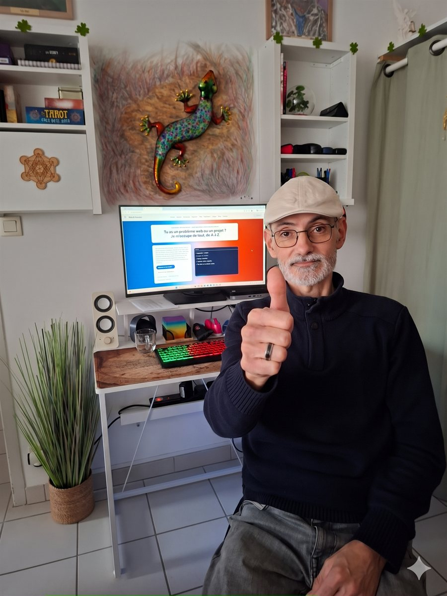
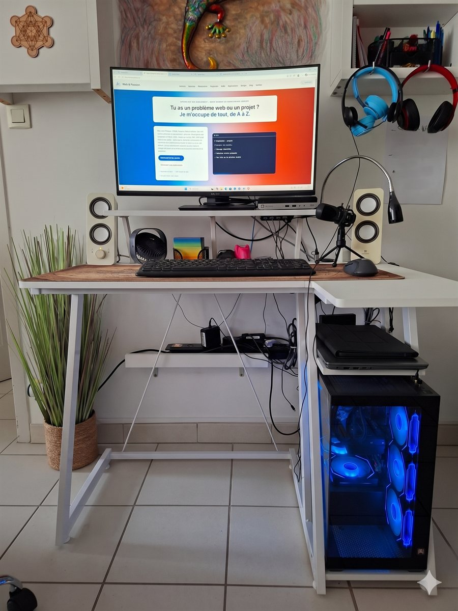
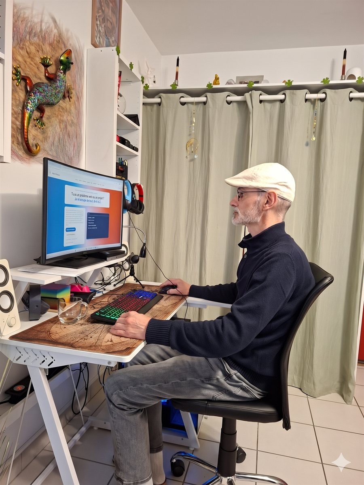

🛠️
Assistance & dépannage
Bug, affichage étrange, formulaire qui ne fonctionne plus ou petite modification : on regarde ensemble.
Dépannage
Cliquez pour en savoir plus →
ASSISTANCE WEB • SEO • IA
Je suis indépendant et passionné par le web. J’aide les particuliers, associations et petites entreprises à dépanner, améliorer et mieux comprendre leur présence en ligne, simplement et sans jargon.
$ diagnostic --site
Analyse en cours…
✓ Problème identifié
✓ Solution expliquée
→ Site amélioré
MES SERVICES
Pas besoin d’être expert en informatique. Je vous aide à comprendre ce qui bloque et à avancer.
Bug, affichage étrange, formulaire qui ne fonctionne plus ou petite modification : on regarde ensemble.
DépannageAmélioration d’un site existant, conseils, contenu, structure et petites évolutions pour le rendre plus clair et efficace.
WebOptimisation des bases : titres, contenus, structure, visibilité locale et bonnes pratiques pour aider les moteurs de recherche à comprendre votre site.
VisibilitéDécouvrir et utiliser l’IA pour gagner du temps : rédaction, idées, organisation, automatisation simple et assistance au quotidien.
IARÉALISATION WEB
Un site multipage consacré à l’Égypte ancienne, à ses dynasties, ses dieux, ses monuments et ses mythes.
SITE MULTIPAGE
Explorez un portail dédié à la civilisation pharaonique, avec des pages sur les pyramides, le panthéon et les dynasties.
Découvrir Égypte éternelle →À PROPOS
Philippe JIREAU — Fondateur de Web & Passion (Var 83)
Basé dans le Var, j’ai créé Web & Passion avec une idée simple : aider les particuliers, associations et petites entreprises à dépanner, créer ou améliorer leur site web sans jargon inutile ni tarifs démesurés. Je ne promets pas de miracles, mais un travail sérieux, honnête et adapté à votre budget.





En images dans le carrousel Cliquez sur une étape pour afficher la photo
Face caméra et pouce levé devant Web & Passion : je suis votre interlocuteur unique, dans un cadre de travail authentique et chaleureux (plante verte, décoration murale artisanale).
Un espace pensé pour l’efficacité à distance : grand écran incurvé ASUS, double configuration (tour PC haute performance éclairée en bleu, mini-PC pro HP et portable d’appoint), microphone sur pied et casques audio.
Installé au clavier rétroéclairé, je prends le temps d’examiner minutieusement votre site (code HTML/CSS, structure SEO, bugs d’affichage) pour identifier la vraie cause d’un blocage avant d’intervenir.
Comme lorsque je pointe l’écran du doigt en me tournant vers vous, nous regardons les choses ensemble : je vous montre concrètement ce qui bloque et vous explique chaque action avec des mots simples.
Du diagnostic validé à l’écran jusqu’au résultat final, mon objectif est que vous repartiez avec un site propre, fonctionnel, rassurant et parfaitement adapté à vos besoins.
COMMENT ÇA SE PASSE ?
Vous me dites ce qui ne va pas ou ce que vous aimeriez améliorer, avec vos mots.
J’analyse la situation et je vous explique ce que j’ai trouvé, simplement.
Je vous propose une solution. Vous restez libre d’accepter, de réfléchir ou de chercher une autre option.
Si vous êtes d’accord, je m’occupe de l’intervention définie ensemble.
RESSOURCE OFFERTE
20 notions indispensables décodées sans jargon technique (hébergement, HTML/CSS, cache, DNS, erreurs 404...). Un guide visuel et pédagogique de 14 fiches pour comprendre enfin ce qui se passe sous le capot de votre site.
PETIT DIAGNOSTIC
Sélectionnez ce qui correspond le mieux à votre situation. Je vous indique ensuite le service qui semble correspondre.
Résultat
BESOIN D’UN CONSEIL ?
CONTACT
Vous avez une question ou un besoin concernant votre site internet, le dépannage web, le référencement ou les outils numériques ? Vous pouvez me contacter par e-mail ou par téléphone.
Web & Passion est une micro-entreprise que je développe depuis mon domicile, en parallèle d’une autre activité professionnelle. Je ne peux donc pas garantir des horaires fixes ni répondre immédiatement à chaque appel.
Si je ne suis pas disponible, vous pouvez laisser un message vocal en précisant votre nom, vos coordonnées et l’objet de votre demande. Je vous recontacterai dès que possible.
Téléphone : 07 71 23 61 36
Je privilégie la transparence, l’écoute et des prestations adaptées à mes compétences et à vos besoins.